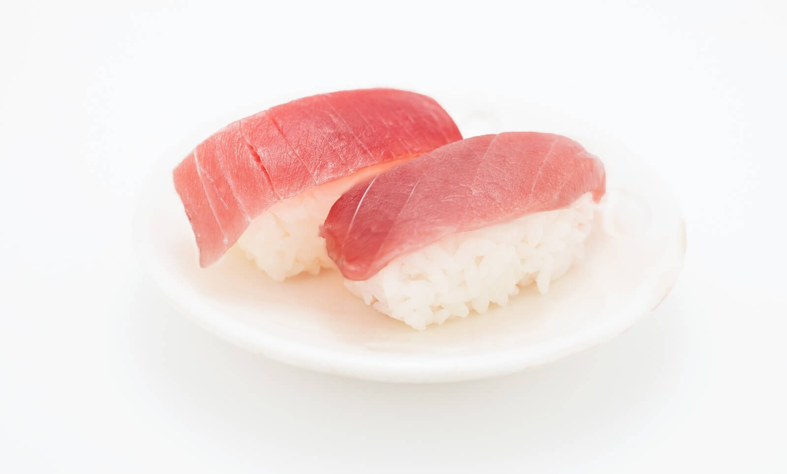
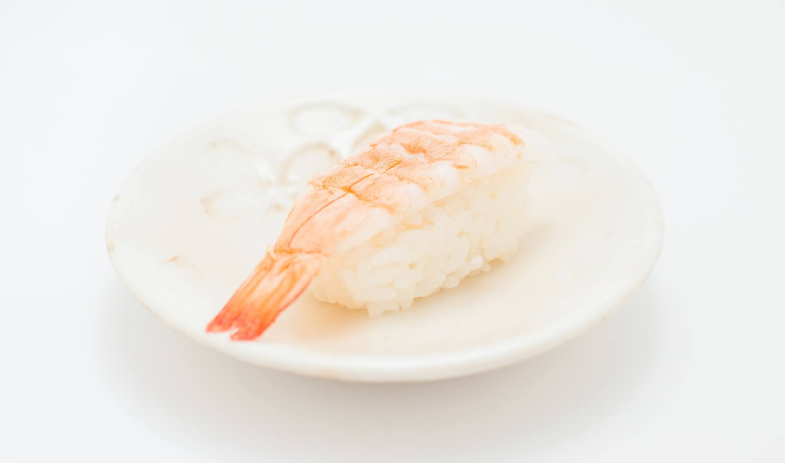
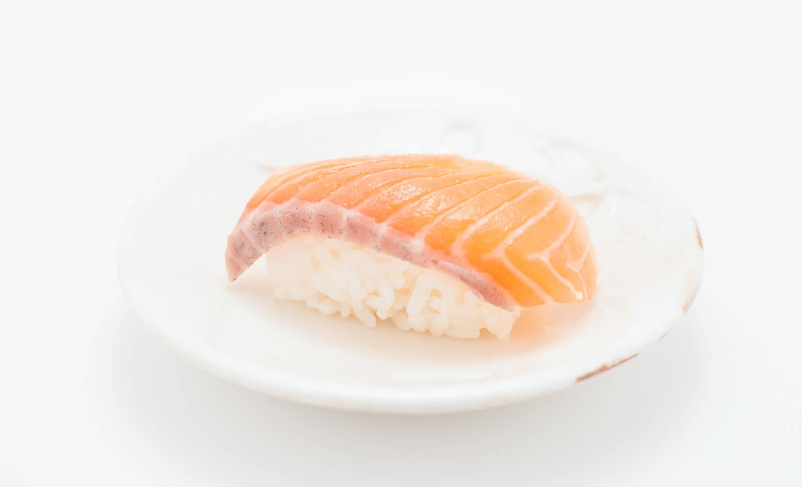
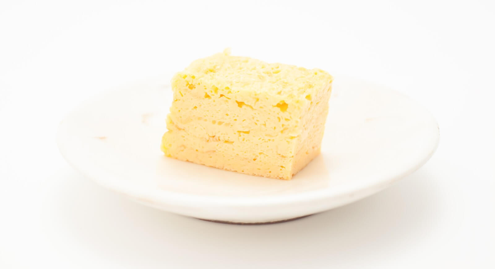
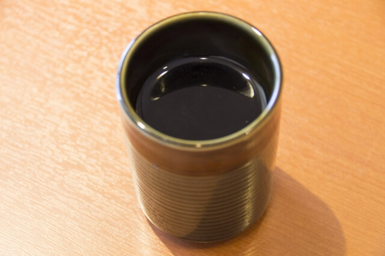
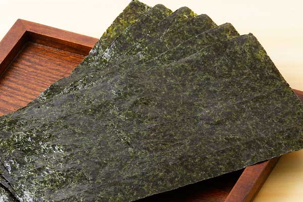
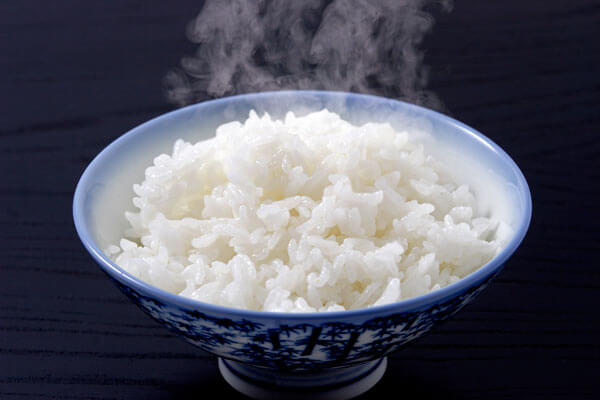
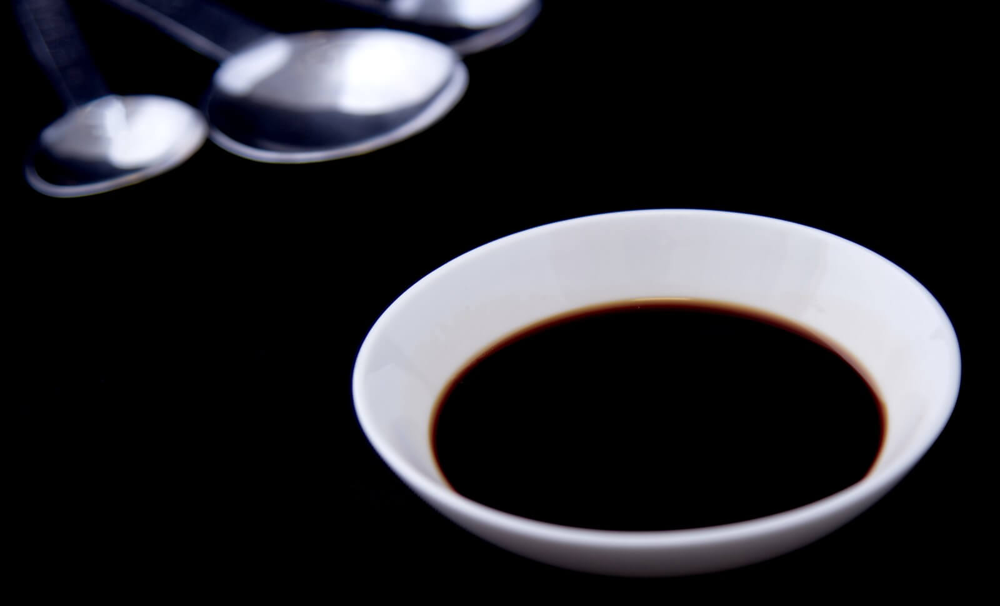

閉じる
まぐろ

回遊魚の一種。
トロが美味しいとされ高価で人気だが、江戸時代は保存性の問題から廃棄されていた。
新鮮なものが美味しいと思われがちだが、死後３〜４日で旨味成分がピークに達するので寝かせた方がいい。
トロが美味しいとされ高価で人気だが、江戸時代は保存性の問題から廃棄されていた。
新鮮なものが美味しいと思われがちだが、死後３〜４日で旨味成分がピークに達するので寝かせた方がいい。
閉じる
えび

甲殻類の一種。
漢字、英語共に表記が複数あるが、いずれもサイズの違いによって使い分けている。
ザリガニはどちらかというとエビ。
漢字、英語共に表記が複数あるが、いずれもサイズの違いによって使い分けている。
ザリガニはどちらかというとエビ。
閉じる
さけ

身は赤いが白身魚。
寄生虫が理由で、元来寿司ネタになかったが、冷凍技術の発展により普及した。
回転寿司で食べられるサーモンはニジマス。
寄生虫が理由で、元来寿司ネタになかったが、冷凍技術の発展により普及した。
回転寿司で食べられるサーモンはニジマス。
閉じる
たまご

寿司屋ではギョクとも呼ばれる。
酢飯の口直しに、甘いネタを取り入れるという理由で大体の店にある。
玉子の良し悪しで、その職人の腕がわかるという、恐ろしいネタ。
酢飯の口直しに、甘いネタを取り入れるという理由で大体の店にある。
玉子の良し悪しで、その職人の腕がわかるという、恐ろしいネタ。
お寿司の美味しい食べ方
ひとつ 醤油はネタにちょこんとつける
醤油をシャリにもどっぷりつけていませんか？
シャリに醤油をたくさんつけてしまうと寿司が崩れてしまいます。
ネタに少し醤油をつけて食べるのがベストです。
ふたつ 口に入れる時はネタを下にする
もちろん好きに食べるのが一番ですが、一度ネタを下に、ひっくり返して食べてみてください。
ネタの味と舌触りが直に伝わって美味しいですよ。
みっつ 食べる時は淡白な味のものから
もし色んな種類の寿司を食べるなら、淡白な味のものから食べて下さい。
味の濃いものから食べてしまうと、口の中に味が残ってしまいます。
用語集
あがり
あがり

お茶
くさ
くさ

海苔
どんしゃり
どんしゃり

普通の飯
むらさき
むらさき

醤油